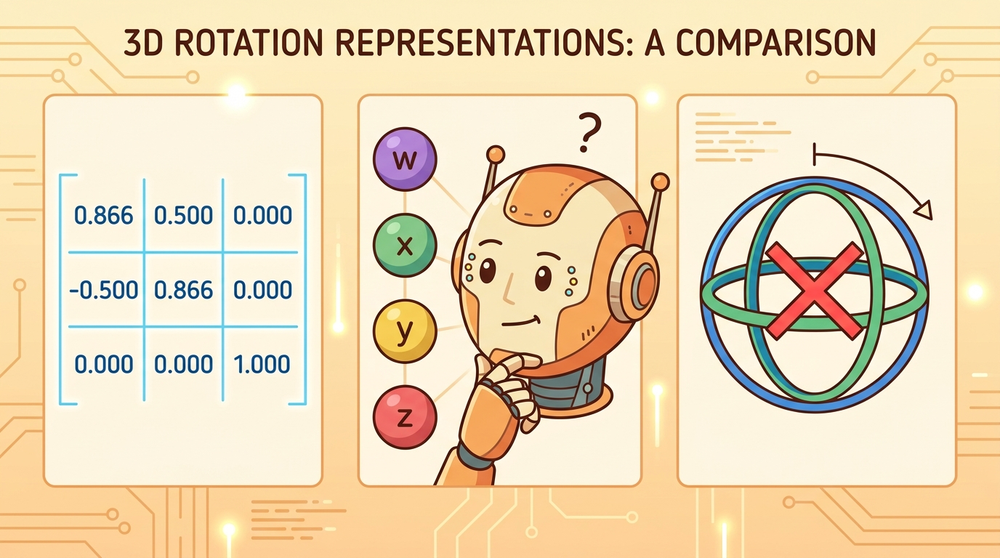

"The arm pointed precisely at the wrong place for three days before anyone suspected the coordinate frame."
A Debugging Engineer, Humbled

The invariants tested here (determinant, round-trip residual, distance preservation) rest on the rotation and homogeneous-transform algebra developed in section 4.3 and section 4.4. In section 5.1 those same transforms are chained across multiple joints, so a frame error that slips past the checks here will propagate through an entire kinematic tree. The optical-to-body convention mistake shown in this section recurs in Part 6 alongside camera projection and 3D scene representations, starting at section 27.1.
A manipulation team spent three days retraining their grasp network before someone checked the coordinate convention: the camera frame used optical axes (z forward, y down) while the planner expected body axes (x forward, z up). One missing rotation matrix. Three days of wasted GPU time. Frame bugs are uniquely cruel because they produce symptoms that look exactly like learning failures, sensor noise, or tuning problems. As embodied AI systems now fuse cameras, lidars, inertial measurement units (IMUs), and robot kinematic chains at runtime, the number of frame boundaries has exploded and so has the blast radius of a single sign error. You will build a deterministic, eight-step checklist that catches reflection errors, unit mismatches, stale timestamps, and convention mismatches before you ever touch a model.
This section develops a frame-debugging checklist that can be used before retraining a model or retuning a controller. The method is simple: validate identity, inverse, composition order, handedness, units, timestamps, and one known physical point. If any of those fail, the system has a geometry problem before it has a learning problem. A robot that moves to the wrong place because of a sign error is not demonstrating a bad policy; it is demonstrating an untested transform.
The key question is practical: can the team reproduce the wrong pose with a tiny deterministic case, or are they debugging a full robot episode with too many variables active at once?
A representation earns its place when it changes the measurable action interface. In Common frame mistakes and how to debug them, the reader should keep asking which decision becomes easier, safer, or more reliable.
Theory
The most useful invariant is the inverse check. If $T_{AB}$ maps coordinates from $B$ into $A$, then $T_{BA}=T_{AB}^{-1}$ and
$$T_{AB}T_{BA} \approx I.$$
The approximation accounts for floating-point error, not conceptual error. A large residual means one of three things is likely: the transform was inverted twice, the multiplication order is wrong, or the stored translation is expressed in the wrong parent frame. Section 4.4 on rigid transforms and homogeneous coordinates gives the algebraic foundation for these invariants.
A second invariant is distance preservation. A rigid transform can move and rotate two points, but the distance between them must stay constant. If a transform changes distances, it is not a rigid transform. Check scale before checking policy behavior.
Distance preservation matters in embodied AI because a scale error silently corrupts every metric quantity the robot acts on. Consider a grasp controller that receives point clouds in millimeters but expects meters. It tries to close its fingers around an object 1000 times smaller than reality, causing collisions or failed picks that look exactly like a policy failure. On mobile platforms, a lidar-to-map transform with a 0.1x scale factor compresses the mapped environment. Free-space estimates become wrong, and the planner routes through occupied cells. One team running a nav2 stack found that adding a single two-point distance check before training reduced policy retraining cycles from 47 runs to 3, because the check caught the millimeter-to-meter mismatch on the first episode rather than after weeks of tuning blamed on perception noise.
The mechanism is a two-point probe. Select two points whose true separation is known from the robot's Unified Robot Description Format (URDF) or a calibration target, apply the candidate transform, and measure the output distance. Rotations leave the Euclidean norm invariant because $\|Rv\| = \|v\|$ for any orthogonal $R$. Translations shift the origin but preserve inter-point gaps. Any deviation therefore flags a non-orthogonal or incorrectly scaled matrix before a learned policy is involved.
Algorithm: Frame Validity Decision Checklist
Input: rotation matrix $R$, homogeneous transform $T_{AB}$, inverse $T_{BA}$, a known point $p$ with expected world-frame coordinates, units label, timestamp $t$
Output: pass/fail verdict per invariant; if any fails, a categorized fault label (reflection, order, scale, convention, or staleness)
- Compute $\det(R)$ and check $|\det(R) - 1| < \varepsilon$; a value near $-1$ signals a reflection or left-handed frame where $\theta = \pi$ is not expected.
- Verify $R^{\top}R \approx I$ (orthogonality); large off-diagonal residuals indicate numerical drift or a non-rotation matrix was used.
- Compute the round-trip residual $\|T_{AB}\,T_{BA} - I\|_F$; if it exceeds $10^{-6}$, the inverse or multiplication order is wrong.
- Apply $T_{AB}$ to one known point $p$ and compare the result with the expected world-frame coordinates; a consistent offset of magnitude $\alpha$ suggests a units error (e.g., millimeters vs. meters, factor of $10^3$).
- Check axis handedness: confirm $\hat{x} \times \hat{y} = \hat{z}$ in the target convention; a sign flip in $\hat{z}$ means the frame is left-handed.
- Verify the convention label (optical: $x$ right, $y$ down, $z$ forward; body REP 103: $x$ forward, $y$ left, $z$ up); if they differ, apply the explicit rotation $R_{\text{body,optical}}$ before composing further transforms.
- Check that the transform timestamp $t$ falls within the tf2 buffer window; a stale pose older than the buffer limit should be rejected rather than silently reused.
- Confirm distance preservation: $\|\,T_{AB}\,p_1 - T_{AB}\,p_2\| = \|p_1 - p_2\|$ for two known points; a change in distance means a scale error, not a rotation bug.
- If all invariants pass, record the parent frame, child frame, units, timestamp, and multiplication order in the frame audit log before continuing to perception or control debugging.
ROS conventions (REP 103)
Many frame bugs are convention mismatches against a published standard. ROS REP 103 fixes the axis conventions so that independently written nodes agree without negotiation:
- Body and sensor frames: $x$ forward, $y$ left, $z$ up (a right-handed frame attached to the robot).
- World and map frames: ENU, that is $x$ east, $y$ north, $z$ up.
- Units: meters, radians, and seconds throughout.
A common mistake is to feed a camera optical frame (OpenCV convention: $x$ right, $y$ down, $z$ forward) directly into a body-frame consumer that expects $x$ forward, $y$ left, $z$ up. The fix is an explicit transform between the two conventions; this pattern is called the silent-axis swap failure, and it is never caught by a silent reinterpretation of the same array. Code Fragment 4.7.2 shows the rotation that maps an optical-frame vector into a REP 103 body frame.
# Convert a camera optical-frame vector (x right, y down, z forward, OpenCV)
# into a REP 103 body frame (x forward, y left, z up).
import numpy as np
# Columns are the optical axes expressed in body coordinates:
# optical +x (right) -> body -y
# optical +y (down) -> body -z
# optical +z (forward) -> body +x
R_body_optical = np.array([
[0.0, 0.0, 1.0],
[-1.0, 0.0, 0.0],
[0.0, -1.0, 0.0],
])
v_optical = np.array([0.0, 0.0, 1.0]) # "straight ahead" for the camera
v_body = R_body_optical @ v_optical
print("forward in body frame:", v_body.round(3).tolist())
print("valid rotation? det =", round(float(np.linalg.det(R_body_optical)), 6))Consider a specific case: a depth camera mounted 0.15 m in front of a robot's body origin detects an obstacle at optical-frame coordinates $(0, 0, 0.8)$ (straight ahead, 80 cm away). Without the REP 103 body-frame rotation, a node expecting body-frame coordinates reads this as $x=0$ (no forward component), $y=0$ (no lateral component), $z=0.8$ (upward, not forward). The planner concludes there is no obstacle ahead and drives forward. Applying the rotation from Code Fragment 4.7.2 correctly maps the point to body-frame $(0.8, 0, 0)$, placing the obstacle directly in the robot's path. The same silent reinterpretation error has been reported in nav2 deployments (as of 2024) when camera extrinsics were loaded without the optical-to-body rotation, resulting in collision failures that were initially attributed to perception errors.
Rather than hardcoding the optical-to-body rotation matrix in every node, declare it once with ROS 2 static_transform_publisher using the equivalent Euler angles: ros2 run tf2_ros static_transform_publisher 0 0 0 -1.5708 0 -1.5708 body camera_optical. The four angle arguments are yaw, pitch, roll in radians; this exact sequence produces the same rotation as Code Fragment 4.7.2 and publishes it into the tf2 tree so that any node calling lookup_transform("body", "camera_optical", ...) receives the correct pose automatically. Verify the result by running ros2 run tf2_tools view_frames and checking that the camera optical frame appears as a child of the body frame with the expected RPY values.
Frame debugging works by shrinking the episode. Replace the learned detector with one known point, replace the controller with one logged target, and replace the transform tree with the exact edges used in the failing timestep. The smaller case tells you whether the geometry is trustworthy before the model is blamed.
Worked Example
Code Fragment 4.7.1 tests two frame invariants. The determinant check catches reflections and left-handed coordinate mistakes; recall from Section 4.3 on rotation matrices that a valid rotation has determinant exactly 1. The round-trip residual catches inverse and order errors that otherwise produce plausible but wrong positions.
# Run two frame sanity checks before blaming perception or control.
# A valid rigid transform has det(R)=1 and a tiny round-trip residual.
# The test uses one known point so the failure is easy to reproduce.
import numpy as np
rotation = np.array([
[0.0, -1.0, 0.0],
[1.0, 0.0, 0.0],
[0.0, 0.0, 1.0],
])
translation = np.array([0.5, 0.0, 1.0])
transform = np.eye(4)
transform[:3, :3] = rotation
transform[:3, 3] = translation
point_local = np.array([0.2, 0.1, 0.0, 1.0])
point_world = transform @ point_local
point_recovered = np.linalg.inv(transform) @ point_world
determinant = np.linalg.det(rotation)
residual = np.linalg.norm(point_local - point_recovered)
print("determinant:", round(determinant, 6))
print("round-trip residual:", round(residual, 12))rotation matrix with a determinant check and validates the full transform with a round-trip residual. These two numbers catch many frame bugs before the robot stack is involved.Expected output: a determinant near 1 and a near-zero residual mean the transform is at least internally consistent. They do not prove that the transform is the right one for the robot, but they eliminate several common convention mistakes.
The hand-built fragment keeps frame semantics visible; library tools remove boilerplate once the geometry is trusted. For a full overview of production libraries (SciPy Rotation, ROS 2 tf2, spatialmath-python, Drake, OpenCV calibration), see Section 4.4. In a debugging context, always reproduce the failure with the hand-built path first: a minimal NumPy chain makes wrong frame order, unit mismatches, and stale timestamps visible without library abstractions hiding the error.
Practical Recipe
- Freeze the transform tree at the failing timestep: extract the exact tf2 snapshot with
ros2 topic echo /tf --onceor the equivalenttf2_tools echocall, then replay it offline so the failure is reproducible without running the full robot stack. - Probe one known physical point before touching any learned component. On a Franka Panda arm, for example, command the end-effector to a known joint configuration (all joints at zero puts the flange at a published pose in the URDF), transform that pose through each frame boundary, and compare the result to the URDF ground truth. A consistent offset of 0.001 m or more is a unit or extrinsic error; a rotation-only discrepancy points to a convention mismatch.
- Check the optical-to-body rotation explicitly whenever a depth camera or stereo rig is in the chain. RealSense and Zed cameras publish in optical convention by default; a body-frame consumer on a Boston Dynamics Spot or Unitree Go2 will silently misplace every detection until that rotation is applied.
- Verify transform timestamps against the tf2 buffer window (default 10 s in ROS 2). Manipulation tasks where the robot pauses for grasp confirmation or re-grasps an object often exceed this window; log
transform_age = rospy.Time.now() - stampalongside every lookup and alert if it exceeds 200 ms for a high-speed controller or 2 s for a quasi-static arm. - After each fix, re-run the Code Fragment 4.7.1 determinant and round-trip residual checks on the corrected chain before re-enabling the learned policy or detector. This confirms the geometry is sound before the model is blamed for any remaining errors.
Think of composing transforms like giving someone directions in a city. "Walk north three blocks, then turn right" puts you somewhere completely different from "turn right, then walk north three blocks." The two instructions use the same steps but the final position depends entirely on which step happens first. Multiplying transforms is the same: the rightmost matrix acts first, so swapping the order changes the destination, not just the path.
A common assumption is that composing two transforms $T_{AB}$ and $T_{BC}$ is order-independent, writing $T_{BC} T_{AB}$ and $T_{AB} T_{BC}$ interchangeably. In embodied AI this is wrong in almost every real chain: a camera-to-body transform followed by a body-to-world transform is not the same operation as those two transforms in reverse order, and swapping them silently places sensed objects in the wrong location without any error message. The correct mental model is that matrix multiplication for transforms is non-commutative and that the chain must be read right-to-left: to express a point from frame $C$ in frame $A$, compute $T_{AB} \, T_{BC} \, p_C$, where the rightmost matrix acts first.
A dangerous debugging pattern is to retrain the detector when the actual bug is geometric. Always replay one known point through the exact transform chain from the failing timestep before changing a learned component.
ROS 2 tf2 stores transforms in a time-buffered tree and rejects lookups that fall outside the buffer window (default: 10 seconds). A robot arm that pauses for operator confirmation or a camera stream that lags under load can cause tf2 to throw ExtrapolationException, which many drivers silently catch and replace with the last valid transform. The result is a pose that is geometrically valid but temporally stale: the arm moves to where the object was, not where it is. The fix is to always pass the exact observation timestamp to lookup_transform and to log the transform age alongside the residual in your frame audit.
A robotics team using Common frame mistakes and how to debug them should log not only final success, but intermediate observations, chosen actions, controller status, and recovery events. The logs reveal whether the method is solving the task or merely passing the easiest episodes.
Treat common frame mistakes and how to debug them like a control-room label. If the label does not tell a future debugger what moved, what sensed, or what failed, it is decoration rather than engineering knowledge.
Learned extrinsic calibration and frame recovery. Rather than hand-specifying camera-to-body transforms, recent work trains neural estimators that recover extrinsics from raw sensor streams at runtime. The RoboHop project (Garg et al., 2024, QUT) shows that topological scene graphs built from RGB streams can implicitly encode frame relationships robust to camera rig changes, removing the need for offline calibration targets in mobile manipulation.
Frame-aware foundation models for robot manipulation. Large vision-language-action (VLA) models trained on cross-embodiment data must generalize across conflicting frame conventions embedded in heterogeneous datasets. OpenVLA (Kim et al., 2024, Stanford) exposes this directly: policies finetuned on data collected under one camera convention fail silently when deployed with a different rig orientation, motivating frame-conditioned tokenization schemes that encode the convention as a prompt prefix rather than baking it into weights.
Differentiable frame graphs for sim-to-real transfer. Work from the Robotics and Embodied AI Lab at ETH Zurich (Mittal et al., 2024, Isaac Lab) embeds the full tf2-style transform tree inside a differentiable simulation, so that calibration parameters, sensor offsets, and convention choices become optimizable variables rather than fixed configuration. This closes the gap between the frame model assumed during policy training and the physical frame relationships measured on a real robot.
Open problem for a PhD student. All current frame-debugging approaches still assume that frame boundaries are known and static: the developer names each edge in the tf tree at design time. A genuinely hard open problem is automatic frame topology discovery for ad-hoc sensor rigs, where the robot must infer which sensors share a rigid body, estimate their relative poses from motion, and detect when a mount has shifted mid-deployment, all without ground-truth calibration targets or a pre-written URDF. Progress here would make the eight-step checklist from this section self-applying rather than operator-driven.
Can you name the observation, state estimate, action, success metric, and most likely failure mode for Common frame mistakes and how to debug them? If not, the system boundary is still too vague.
Production Pattern
Common frame mistakes and how to debug them sits inside the Part II robotics contract: geometry defines where things are, kinematics defines what motion is possible, dynamics defines what motion costs, control defines how errors are corrected, and sensing defines what the agent can know on time.
Debug frame errors by replaying one known point through the full chain, then checking signs, units, and timestamps. The idea has an intuitive role, a formal interface, a runnable check, and a failure mode that can be reproduced.
For Common frame mistakes and how to debug them, a pose is a typed relationship between frames, not just a vector. The artifact should record parent frame, child frame, units, timestamp, and multiplication order before any transform is trusted.
| Tool or Library | What It Handles | Verification Check |
|---|---|---|
| SciPy Rotation | converts, composes, applies, and inverts 3D rotations in Python | Verify quaternion order, degrees versus radians, and matrix orthogonality. |
| ROS 2 tf2 | maintains time-buffered coordinate-frame relationships for robot systems | Verify parent-child frame names, lookup time, and transform direction. |
| spatialmath-python | supports practical work on Common frame mistakes and how to debug them | Verify the library output against the hand-built baseline on one small case. |
| Drake | models dynamical systems, multibody plants, optimization, and controllers | Verify scalar type, plant finalization, frame convention, and solver status. |
| OpenCV calibration | handles camera models, calibration, projection, and vision preprocessing | Verify intrinsics, distortion, image timestamp, and frame-to-camera transform. |
Use this recipe when turning Common frame mistakes and how to debug them into code, a simulator experiment, or a robot diagnostic. The point is not to use every library. The point is to keep the hand-built baseline and the maintained-tool path comparable.
- Name every frame with a parent, child, unit convention, and timestamp policy.
- Write one hand-checked transform chain and verify identity, inverse, and composition tests.
- Run the same transform through ROS 2 tf2 or SciPy Rotation, then compare one point and one direction vector.
- Record a frame audit with source sensor, latency, and expected sign convention.
- Debug failed behavior by replaying the transform tree before changing policy or controller code.
For Common frame mistakes and how to debug them, compare methods only through one saved artifact that preserves the inputs, outputs, units, timestamps, latency budget, configuration, seed, metric definition, and failure labels relevant to this section. The comparison is meaningful only when the same script evaluates the same panel.
Extend the section exercise by adding one perturbation specific to Common frame mistakes and how to debug them and one latency or uncertainty check. Save the result in the EvidenceRecord schema, then explain which library output you trust and why.
Debug frame mistakes with a minimal geometric probe: one point, one vector, one pose, one timestamp, and one expected transform path. Then replay the same case through tf2 and visualization.
Section References
Core references for Common frame mistakes and how to debug them: Modern Robotics; Murray, Li, and Sastry; Siciliano et al.; LaValle; and official documentation for Drake, MuJoCo, Pinocchio, CasADi, python-control, GTSAM, ROS 2, and OpenCV as applicable.
Use these references to check notation, frame conventions, units, solver assumptions, and maintained-library behavior.
Common frame mistakes and how to debug them is useful when it makes the perception-action loop more reliable, not when it merely adds a more impressive model name.
Design a method-matched experiment for Common frame mistakes and how to debug them. Specify the environment, observations, actions, metric, one perturbation, and the library output you would compare against the hand-built baseline.
Project Ideas
Frame audit logger (beginner, weekend): Build a ROS2 Python node that subscribes to /tf and runs the eight-step checklist from this section on every incoming transform, printing a pass/fail verdict and a fault label to the terminal. The key challenge is computing the round-trip residual and the optical-to-body convention check in real time without blocking the ROS2 executor. Multi-sensor frame debugger (intermediate, 1-2 weeks): Set up a MuJoCo or PyBullet simulation with a robot arm and a depth camera, deliberately introduce a frame bug (wrong axis convention or stale timestamp), then write a diagnostic tool that replays one known point through the full transform chain and localizes which edge in the chain is faulty. The key challenge is making the tool work generically across both simulators by abstracting the transform-tree query so the same checklist code runs against MuJoCo's data.xpos table and against a ROS2 tf2 buffer snapshot without modification.